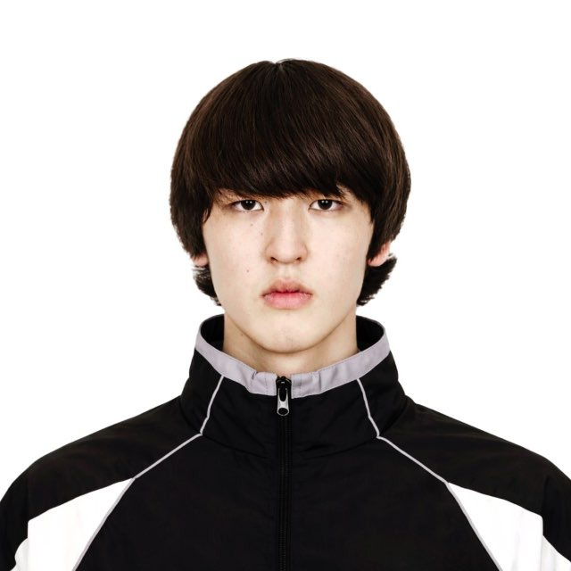

Director, Cinematographer & Film Editor. I turn raw footage into structured, high-retention narratives with clear pacing and emotional rhythm.
Get in touchI take ownership of story structure, narrative flow, and final cut, so creators can focus on content and growth.
Editing Director specializing in long-form YouTube and documentary-style storytelling. I help creators turn raw footage into structured, high-retention narratives with clear pacing and emotional rhythm.
Reviewing and organizing all raw material, identifying key moments and narrative threads
Building the story arc, establishing pacing and emotional beats for maximum retention
Color grading, sound design, polish — delivering a finished piece ready to publish
I take full responsibility for story structure, pacing, and emotional tone, so you can focus on creating content and growing your audience.
Every cut serves the story and the algorithm. I structure content for maximum retention without sacrificing narrative quality or emotional impact.
Trained at NYFA in screenwriting and dramaturgy. I bring cinematic sensibility to YouTube, music videos, and commercial projects alike.
Videos reaching 200K, 500K, 1.8M and 2.4M views. I know what works for long-form YouTube, short-form viral content, and documentary storytelling.
Video/Film Editing & narrative storytelling. YouTube long-form & short-form retention editing. Documentary & cinematic editing.
Working with creators, influencers, and production teams. Structuring complex stories from raw footage. Music-driven pacing and emotional timing.